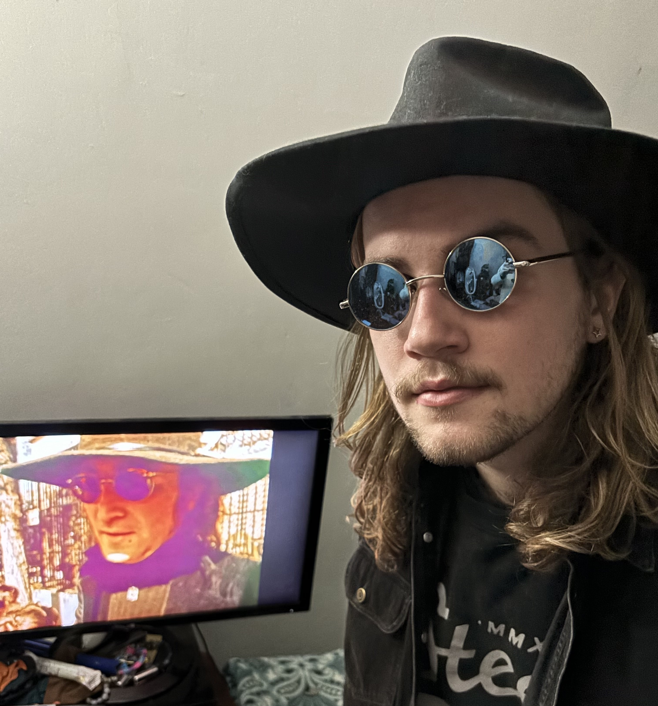

These are my main project pages, whose source can be found on my github. On these pages I will go into more detail about each project.
This page is a personal blog, page to show off my projects, and a general way for me to learn web development!
I am a computer science student at the Ohio State University, interested in information security and embedded development, and run a side business doing 3D printing on custom3dmade.com. I am also a musician, and enjoy listening to and playing anything from jazz to metal. Other passions of mine inclue amateur radio, luthiery, herpatology, and more!